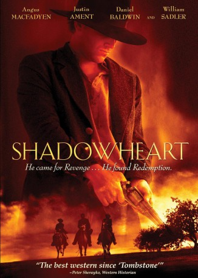

#3625 Shadowheart - Der Kopfgeldjäger
Alternativ: Shadowheart
 
 IMDB-Wertung: 4.7 / 10
IMDB-Wertung: 4.7 / 10  Metascore: 0
Metascore: 0 
Als Junge erlebte er mit, wie sein Vater, ein Prediger, ermordet wurde. Als Soldat wurde er Zeuge der Gräuel des Krieges. Als Kopfgeldjäger kehrt er in seine Heimatstadt Legend zurück, um mit dem Mann abzurechnen, der ihm seine Kindheit raubte: Will Tunney. Doch James Conners gerät in einen Hinterhalt und wird zurückgelassen - scheinbar tot. Die Indianer nehmen sich seiner an und kümmern sich um ihn. Conners, der ein Leben lang von Rache geträumt hat, lernt nun eine neue Welt kennen, die ihn zwingt zu wählen - Zwischen seiner Gier nach Rache und seinem Wunsch nach Erlösung.
Jahr: 2009
Dauer: 109 Minuten
FSK:
Land: USA Studio: Anchor Bay EntertainmentTonspuren: DTS - ,
Untertitel: Deutsch,
Auflösung: 720p (1280x544) Größe: 5406 MB
Genre: Action, Thriller, Drama, Western, Liebe
Regisseur: Dean Alioto
Drehbuch: Aleksandr Gonorovskiy
Soundtrack:
Darsteller:
 Angus Macfadyen als Will Tunney
Angus Macfadyen als Will Tunney- Justin Ament als James Conners
- Marnie Alton als Mary Cooper
- Tonantzin Carmelo als Miakoda
 Michael Spears als Washakie
Michael Spears als Washakie William Sadler als Thomas Conners
William Sadler als Thomas Conners- Dean Alioto als Spider
- Ines Dali als Velma
- Anthony Michael Jones als Charlie
 Courtney Gains als Finch
Courtney Gains als Finch- Shawn Reaves als Johny Cooper
 Charles Napier als Sheriff Sanders
Charles Napier als Sheriff Sanders Daniel Baldwin als Mr. T.S. McKinley
Daniel Baldwin als Mr. T.S. McKinley- Steve Pink als O'Toole
 Rance Howard als Wedding Preacher
Rance Howard als Wedding Preacher Devin Brochu als Young Johnny
Devin Brochu als Young Johnny- Todd Cahoon als Thug #1
- Timothy Patrick Cavanaugh als JD Harison
- Miguel Corona als Thug #5
- Christian Fortune als Young James
- Fred Griffith als Marshall
- Ross Hagen als Missionary
- Ricky Dean Logan als Towns Person #4
- Trish Moreno als Mrs. Lane
- Zach Selwyn als Deputy Brian
 Peter Sherayko als Commanding Officer
Peter Sherayko als Commanding Officer- Larry Zeug als Deputy
- Marcos Akiaten als Native American Prisoner , uncredited
- Jonathan Erickson Eisley als Town Drunk , uncredited
 Justin Rodgers Hall als Big John , uncredited
Justin Rodgers Hall als Big John , uncredited- Nikki Pelley als Townsperson #5 , uncredited
- Matt Alioto als Thug #4
- Ruby Alioto als Penny
- Brian Ament als Fourth Officer
- Bruce Ament als Third Officer
- Jeff Barott als Towns Person #3
- Nigel Daly als Garrick Haring
- Jeff Enden als Thug #2
- Tommy Giavocchini als Griffiths
- David Hendricks als Townsfolk
- Brandon Karrer als Prisoner
- Kevin McNiven als Wedding Reception Singer
- Stephanie Patton als Young Mary
- Tony Ritter als Thug #6
- Louise Salter als Townsfolk
- Matt Silver als First Captain
- 'Snake Dancer' Tom Troutman als Tom
- Lydia A. Butler als Prostitute , uncredited
- Elaine Meyers als Native American Prisoner , uncredited
- Jeff Sutherland als A friend of James at the dance , uncredited
Datei: X:\HD-Western-2000-2015\Shadowheart - Der Kopfgeldjäger (2009, FSK, 1280x544).mkv seit 10.05.2016
Festplatte: HD Eastern+Western
 Es gibt insgesamt 61 Filme in der Gruppe 'HD-Western-2000-2015'
Es gibt insgesamt 61 Filme in der Gruppe 'HD-Western-2000-2015'